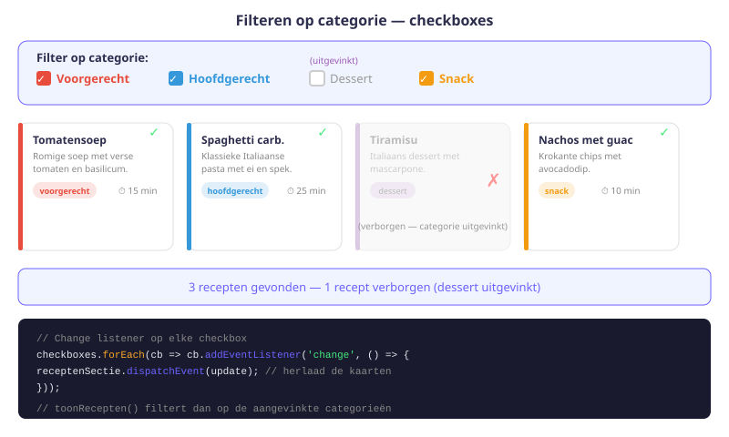
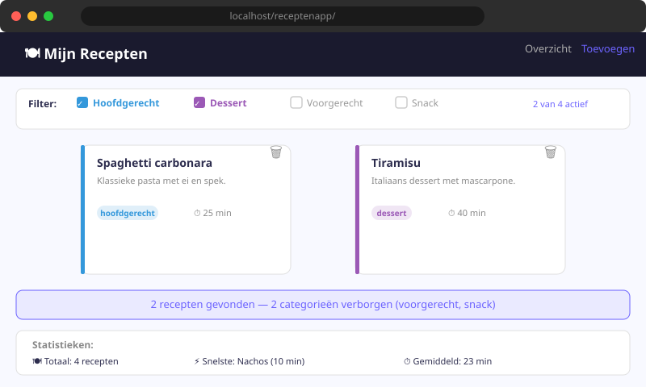

Receptenapp — Filteren op Categorie
- Checkboxes toevoegen aan een HTML-formulier en hun waarden uitlezen via JavaScript
- Een
CustomEventaanmaken en dispatchen om componenten los te koppelen - Een
change-event listener toevoegen op meerdere checkboxes tegelijk - Een filterfunctie schrijven die de receptenlijst beperkt op basis van geselecteerde categorieën
- De volledige
toonRecepten()-functie bijwerken zodat filter en verwijdering samenwerken
13.1 Wat gaan we bouwen?
In de vorige hoofdstukken kon je recepten toevoegen en verwijderen. In dit hoofdstuk voegen we filtercheckboxes toe: vier vinkjes waarmee de gebruiker kiest welke categorieën getoond worden.
Gewenst gedrag:
- Bij het laden van de pagina zijn alle vier categorieën aangevinkt → alle recepten zichtbaar
- Haal je het vinkje weg bij "Dessert" → desserts verdwijnen uit de lijst
- Zet je het vinkje terug → desserts verschijnen opnieuw
- De update is live: geen herlaad nodig, geen knop

13.2 HTML voor de checkboxes
Open index.html. Voeg boven de receptenlijst een formulier toe met vier checkboxes. Let op het name-attribuut: alle vier dragen dezelfde naam categorie, maar een andere value.
<form class="categorieën">
<fieldset>
<legend>Filter op categorie</legend>
<label>
<input type="checkbox" name="categorie" value="voorgerecht" checked>
Voorgerecht
</label>
<label>
<input type="checkbox" name="categorie" value="hoofdgerecht" checked>
Hoofdgerecht
</label>
<label>
<input type="checkbox" name="categorie" value="dessert" checked>
Dessert
</label>
<label>
<input type="checkbox" name="categorie" value="snack" checked>
Snack
</label>
</fieldset>
</form>Waarom hetzelfde name-attribuut? Door alle checkboxes dezelfde naam te geven, kunnen we ze in één keer ophalen met querySelectorAll('input[name=categorie]'). Dat is veel handiger dan vier aparte id's.
Het checked-attribuut zorgt dat de vinkjes bij het laden al aangevinkt zijn.
13.3 Custom Event opzetten
We gebruiken een CustomEvent om de receptenlijst te vernieuwen. Maar waarom niet gewoon toonRecepten() direct aanroepen?
Het voordeel van een CustomEvent:
- Het filtermechanisme en het weergavemechanisme zijn losgekoppeld
- Later kan je vanuit élk deel van de code een update triggeren door het event te dispatchen
- Het is schaalbaar: meerdere listeners kunnen reageren op hetzelfde event
// script.js — bovenaan, na de selectoren
const receptenSectie = document.querySelector('.recepten');
// Maak het custom event aan
const update = new CustomEvent('receptenUpdate');
// Koppel de luisteraar aan de sectie
receptenSectie.addEventListener('receptenUpdate', toonRecepten);13.4 Change listener op elke checkbox
Elke keer dat een gebruiker een checkbox aan- of uitzet, moet de receptenlijst herberekend worden:
const checkboxes = document.querySelectorAll('input[name=categorie]');
checkboxes.forEach(cb => {
cb.addEventListener('change', () => {
receptenSectie.dispatchEvent(update);
});
});Stap voor stap:
querySelectorAll('input[name=categorie]')→ geeft een NodeList terug met alle vier de checkboxes.forEach(cb => ...)→ loop over elke checkboxcb.addEventListener('change', ...)→ luister naar wijzigingenreceptenSectie.dispatchEvent(update)→ schiet het custom event af →toonRecepten()wordt uitgevoerd
13.5 maakCategoriesLijst() — welke categorieën zijn aangevinkt?
We hebben een hulpfunctie nodig die de momenteel aangevinkte categorieën teruggeeft als een array van strings:
function maakCategoriesLijst() {
const geselecteerd = [];
checkboxes.forEach(cb => {
if (cb.checked) {
geselecteerd.push(cb.value);
}
});
return geselecteerd;
}Voorbeelden van wat deze functie teruggeeft:
// Alleen "voorgerecht" en "dessert" aangevinkt:
maakCategoriesLijst(); // → ["voorgerecht", "dessert"]
// Alle vier aangevinkt:
maakCategoriesLijst(); // → ["voorgerecht", "hoofdgerecht", "dessert", "snack"]
// Niets aangevinkt:
maakCategoriesLijst(); // → []13.6 toonRecepten() updaten — filter op categorie
Nu passen we toonRecepten() aan. We halen de lijst van aangevinkte categorieën op en tonen alleen de recepten waarvan de categorie in die lijst voorkomt:
function toonRecepten() {
const geselecteerdeCategorieen = maakCategoriesLijst();
// Leeg de receptensectie
document.querySelector('.recepten').innerHTML = '';
// Loop over alle recepten
alleRecepten.forEach(r => {
// Controleer of de categorie van dit recept geselecteerd is
if (geselecteerdeCategorieen.includes(r.categorie)) {
voegReceptToe(r);
}
});
}
// Initialiseer de pagina
toonRecepten();Wat doet includes() hier? geselecteerdeCategorieen.includes(r.categorie) kijkt of de categorie van het recept (bv. "dessert") voorkomt in de array van aangevinkte categorieën. Als ja → toon het recept. Als nee → sla over.
Oefeningen
Implementeer de filtercheckboxes en test het gedrag:
- Voeg de HTML-checkboxes toe aan
index.html. - Implementeer
maakCategoriesLijst()en de change listeners. - Pas
toonRecepten()aan om de filter te respecteren. - Test: voeg minstens 2 recepten per categorie toe en filter dan op elke categorie apart.

Voeg twee knoppen toe aan de HTML:
<button type="button" id="btn-alles-aan">Alles selecteren</button>
<button type="button" id="btn-alles-uit">Alles deselecteren</button>Schrijf de JavaScript voor deze knoppen: bij klik op "Alles selecteren" worden alle checkboxes aangevinkt, bij "Alles deselecteren" worden ze allemaal uitgezet. Vergeet niet het update-event te dispatchen na elke klik.
Voeg stijlregels toe aan stijl.css zodat de filter er visueel aantrekkelijk uitziet. Verwijderd de border van het fieldset-element en geef elke label-tekst de kleur van de bijbehorende categorie:
- "Voorgerecht" → rood (
var(--voorgerecht)) - "Hoofdgerecht" → blauw (
var(--hoofdgerecht)) - "Dessert" → paars (
var(--dessert)) - "Snack" → oranje (
var(--snack))
Huistaak
Opdracht: Complete filterlogica implementeren
Deel 1 — HTML en stijl (3 punten)
- Voeg de vier filtercheckboxes toe aan
index.html. - Stijl de checkboxes met de categoriekleuren via CSS.
Deel 2 — JavaScript (4 punten)
- Implementeer
maakCategoriesLijst(). - Voeg change listeners toe op alle checkboxes.
- Pas
toonRecepten()aan met de filterlogica.
Deel 3 — Extra knoppen (3 punten)
- Implementeer "Alles selecteren" en "Alles deselecteren" knoppen.
Vragenlijst
Controleer of je de leerstof van dit hoofdstuk begrijpt.
Waarom krijgen alle vier de filtercheckboxes hetzelfde name-attribuut?
Welk event gebruik je voor checkboxes om wijzigingen op te vangen?
Wat doet geselecteerdeCategorieen.includes(r.categorie) in de filterfunctie?
Wat geeft maakCategoriesLijst() terug als alle checkboxes uitgevinkt zijn?
Wat is het voordeel van een Custom Event ten opzichte van het rechtstreeks aanroepen van toonRecepten()?
Hoe zet je een checkbox programmatisch aan in JavaScript?